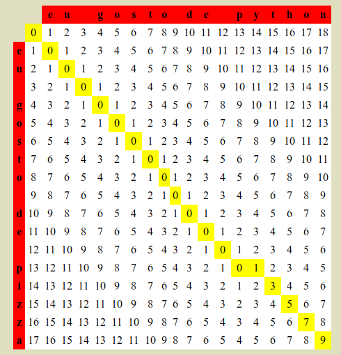
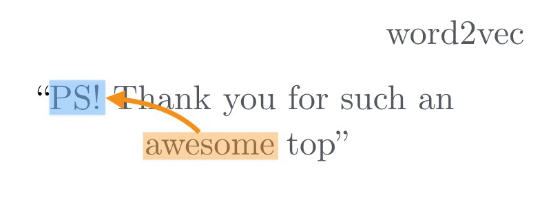
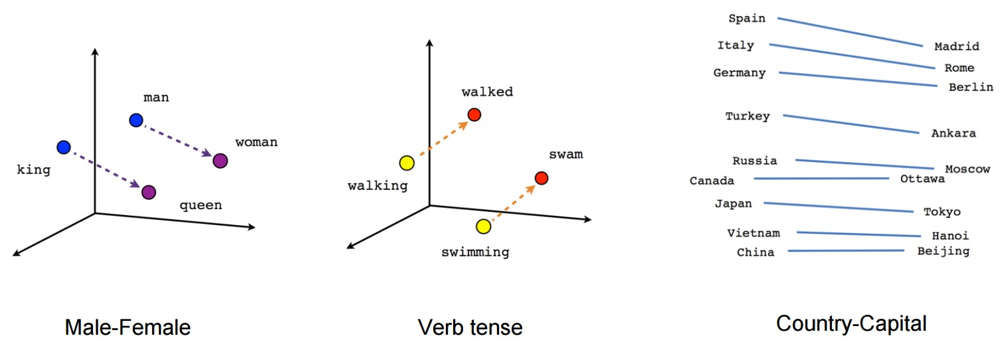
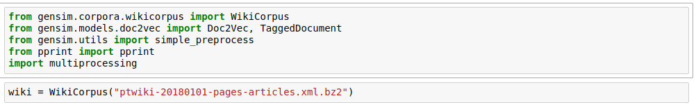
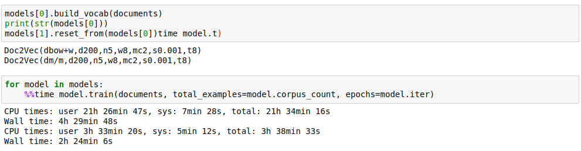
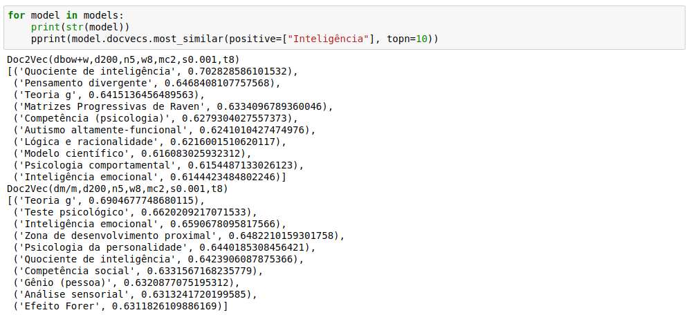
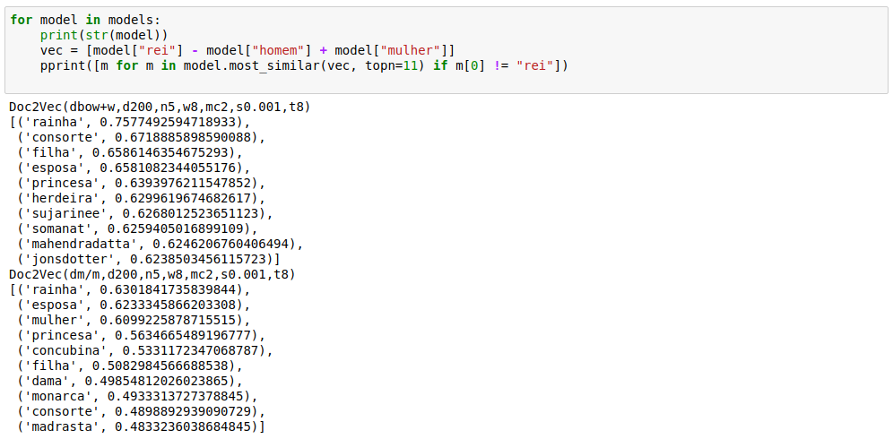
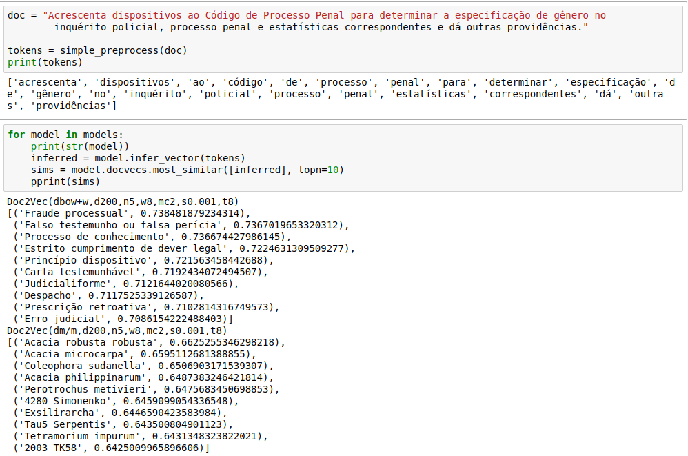

Classificação Textual
NLP
Para aprender mais sobre NLP veja o video do 2º PyDataBSB
Bag of Words
Uma das abordagens mais comuns para classificação textual

O Problema:
"Eu gosto de pizza" == "Eu gosto de python"?
Vetores de Palavras
(não esse vetor...)
Como funciona?
Direção representa conceitos

Mais exemplos:
ptwiki2vec
O que eu usei
Preprocessamento
Treinando os modelos
i7, 16gb ram, SSD 256gb
4 horas depois...
Similaridade:
Operações:
Inferência:
Resultados
Mais de 100.000 projetos de lei analisados em 1h
“Altera o Decreto-Lei nº 3.689, de 3 de outubro de 1941 - Código de Processo Penal, para possibilitar a suspensão do cargo, emprego ou função pública durante o processo que julgar crime praticado por funcionário público.”
| Tópico | Similaridade |
|---|---|
| Desobediência | 0.7920684218406677 |
“Insere causa de aumento de pena nos crimes de estupro e de estupro de vulnerável, consistente na prática da conduta por duas ou mais pessoas - "estupro coletivo.”
| Tópico | Similaridade |
|---|---|
| Maus-tratos | 0.7736256122589111 |
“Dispõe sobre a obrigatoriedade da inclusão do suco de laranja nos cardápios do programa de alimentação escolar.”
| Tópico | Similaridade |
|---|---|
| Merenda | 0.6975668668746948 |
“Dispõe sobre a aposentadoria em tempo inferior para bailarinos, artistas circenses, artistas e cantores líricos, músicos, instrumentistas, coristas e atores, regulamentando o artigo 202, inciso II, da Constituição Federal.”
| Tópico | Similaridade |
|---|---|
| Lista de emendas à constituição brasileira de 1988 | 0.5848907232284546 |
Download dos resultados em https://drive.google.com/open?id=1bCafrrl8QqA_RsdKcNsw7zkHAMw6V7d6
Dúvidas?
Desafio
Apliquem o mesmo raciocínio no seguinte conjunto de dados: